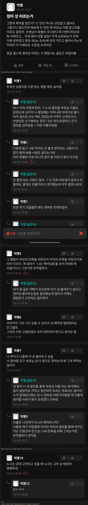

20대 남녀 고민거리 차이
댓글
ㄹㅇ관심없긴함
재혼가정으로 보이고 싶으면 마음대로 해도 됨
초딩때 무조건 애들이 놀림
몸이 편하니까 계속 요구함
개좆빙구련들이 자녀 성이 무슨 남자가 사냥감에 낙인찍는 정도로 생각하는데 달리 생각하면 내 성씨 달고있는 자식새끼 먹여살려야한다는 평생의 업을 진다는건 모름
어디 씻팔 좆소 200따리 련들이 저딴소리하나
부모가 성만 같아도 개족보라고 하는 시대인데
울엄빠 성 같아
근데 어떻게해 애가생겼는데
본관 따르면 되지
동성동본임 ㅋㅋ
진짜 그런시대야?! 나는 처음 듣는 얘기야
ㄴㄴ저 어르신은 나이가 80이상 되시나봄 그런시대아님ㅋㅋㅋ
문신이랑 비슷한 맥락임
논리적으로는 문제될게없지만 사회관습적으로 받아들이기 힘든거지
미국 일본 처럼 결혼할때 성 바꿔야 정신차리려나
영미 남편성만 봐도 시대착오적인건 맞는데 눈치 보다가 스타트를 못 끊음
사회적인 시선을 감당하는것은 아이의 몫인데
여자가 돈 존나 많이 벌고 아파트까지 해오면 가능
엄마성도 할아버지 성이여
ㄹㅇ ㅋㅋㅋ 외할아버지성이잖아
걍 여자쪽이 집해오고 돈잘벌면
여자성 따르면 되는거아녀?
가족형성기에여 공이 더 큰쪽의 성을 따르면 됨.
이혼할때도 따른 성 쪽에서 더 많은 부담을 가지면 되고.
근데 그렇게 하면 성으로써의 의미가 없어지지 않음?
집안을 나타내는 의미로 사용하는 건데
이렇게 수백년 지나는 과정에 누구는 엄마 했다 아빠 했다 하면 무슨 의미임
아빠성-> 기댓값0이상
엄마성-> 기댓값0이하
인데 굳이 왜 엄마성따라야함.
김이박 2천만 나라에서 성이뭐가 그렇게 중요한지.. 조씨가 그리고 뭔범죄자임 김이박이 압도적인데 특정성씨 비하할려는 의도도 다분하네
외국이면 뭐 아무런 문제 없는 가정도 충분히 생길 수 있는 일이라 흔한데, 한국은 어렵지. 굳이? 사회적 선입견이 있는이상 굳이 불필요한 리스크를 짊어질 필요가 있나?